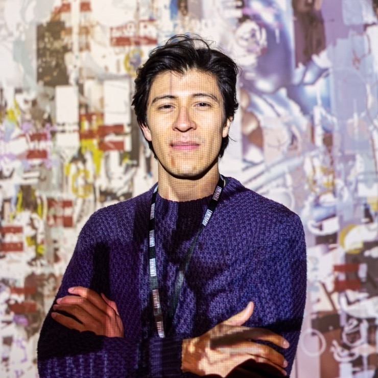

Experimental musician currently based in Mexico City.
With his ever growing skills in various programming languages such as Pure Data, Max, SuperCollider, Processing and Bash, among hardware synthesizer explorations, Isaac Medina creates atmospheres and sound effects for sound art installations, film and advertising.
He is also editor of the publication [iom!], which presents recipes in Spanish for the visual programming language Pure Data.